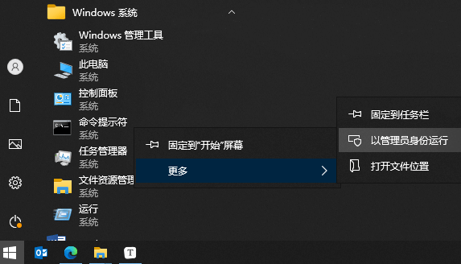

通过Mac找电脑名
局域网（Local Area Network, LAN），又称内网，是指在某一区域内由多台计算机互联成的计算机组。
打开 Windows 命令提示符。
输入“arp -a”，获得IP和MAC地址
1 | arp -a |
输入“tracert <ip>”，获得IP对应的电脑名。如图，DESKTOP-XXXX就是电脑名称。
1 | tracert 192.168.3.31 |
这里是找到电脑名称，在实际的物理世界中，就需要通过断网大法，物理检查电脑实际位置。
再如果是远端广域网的电脑，那…….，不能多说了。